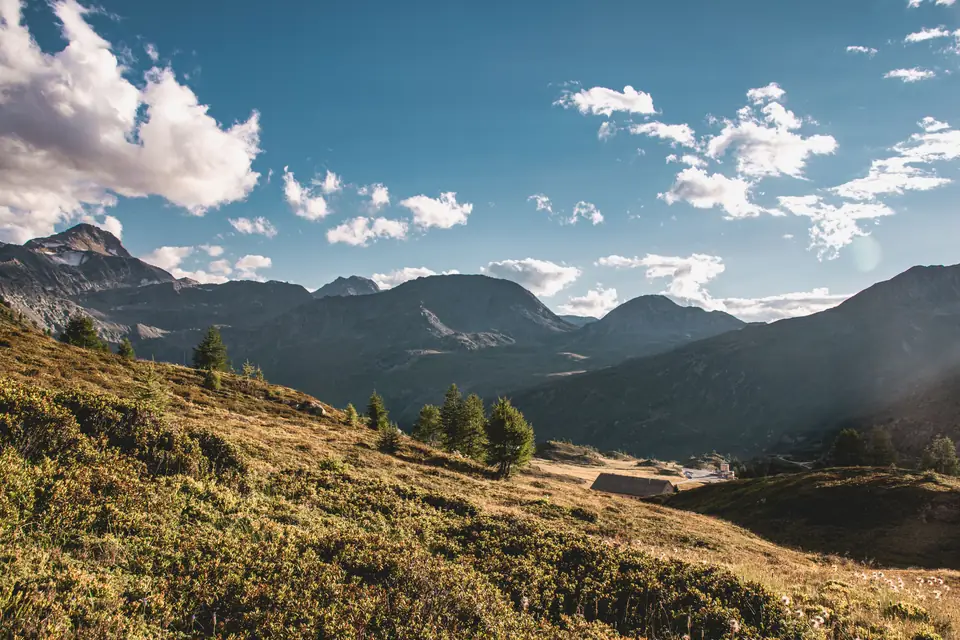

Retraites & evenementen
Tijd en ruimte om echt op adem te komen.
Samen ervaren, ontdekken en verbinden
Soms ontstaat er iets bijzonders als je het samen doet. In een groep leer je van elkaar en deel je wat je ontdekt.

Wat is het?
Tijdens een workshop of groepsactiviteit ontdek je samen met anderen wat rust, aandacht en verbinding voor jou betekenen. Vaak gebeurt dat buiten, in de natuur.
Wil je met je eigen groep iets organiseren, bijvoorbeeld met vrienden of familie? Ook dan kun je Kim een bericht sturen om de mogelijkheden te bespreken.
Hoe werkt het?
Wil je meedoen of zelf iets organiseren? Stuur Kim een bericht; dan hoor je welke mogelijkheden er zijn.
Je laat weten waar je interesse naar uitgaat.
We bespreken wat er mogelijk is en wat bij jou of je groep past.
Je ervaart en ontdekt samen met anderen.
Goed om te weten
Stuur Kim een bericht via de contactpagina; dan hoor je of er binnenkort iets gepland staat.
Neem contact op om je wensen te bespreken. Samen kijken we wat er mogelijk is.
Nee. Iedereen is welkom, ook als je hier voor het eerst mee kennismaakt.
Stuur Kim een bericht via de contactpagina voor meer informatie over de mogelijkheden en kosten.
Tijd en ruimte om echt op adem te komen.
Vertragen, voelen en weer richting vinden.
Natuur als inspiratie voor teams en leiders.
Je hoeft het niet meteen te weten. In een kennismaking ontdekken we samen wat je zoekt.
Neem contact op